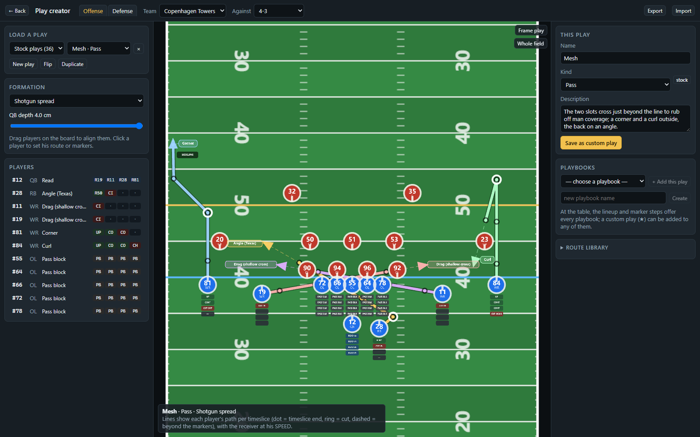
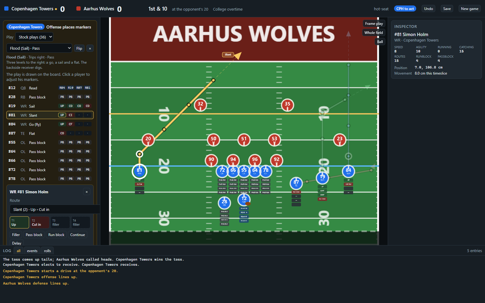
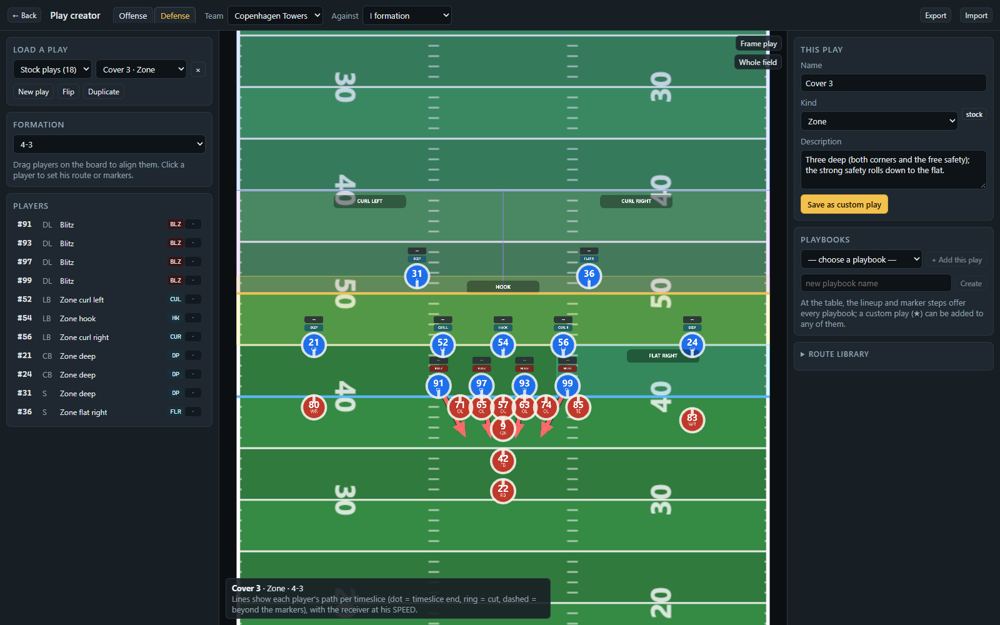

Placing forty-four markers by hand every snap was the one thing the digital table did worse than the real one. Now a coach calls a play by name, sees every route drawn on the field, and adjusts a player with a click.
The rule creator's design note was short: look at the route diagrams of college and pro football, rebuild each route from the game's own markers, ignore fillers (a route ends with its cut, and the receiver keeps running on that line), and allow only four shapes: [Cut], [direction][Cut], [direction][direction][Cut], [direction][direction][direction][Cut]. A direction is UP, an angle, CONTINUE or DELAY.
That gives a library of forty-one named routes: the route tree (flat, slant, out, drag, comeback, dig, corner, post, go), the quick game (hitch, stick, arrow, shallow), the double moves (sluggo, out and up, post-corner, whip), the backfield routes (swing, angle, wheel, check release) and the delays and screens. Angles and cuts are written towards the middle or the sideline and resolve to LEFT or RIGHT for whichever side the receiver lines up on, so a slant is one entry, not two.
Every route carries the direction a coach would take at the cut. The engine lets him pick any direction inside the cut's sector when the receiver moves, so a post and a dig are the same four markers; what differs is where the coach breaks. The board draws that: the path at the receiver's own SPEED, half in timeslice 1 and full after, a dot at the end of each timeslice, a ring at the cut, and a dashed line beyond the markers where the play goes on.

A play is a formation with a marker set for every slot. Laying it on the field is a matching problem: the quarterback and linemen take theirs, everyone else takes the nearest slot by where he stands, so a dragged or substituted player gets the markers of the spot he is in. Read and hand-off targets inside a play name slots, not players, and become players when the play is laid down. A play flips left to right with one button.
The stock playbook has thirty-six offensive plays (Four Verticals, Mesh, Smash, Flood, Stick, Levels, Dagger, Drive, Post-Wheel, Y-Cross, Iso, Power, Toss, Counter, Draw, inside and outside zone, screens, play action) and eighteen defensive calls (Cover 1 to 4, Cover 0, Tampa 2, a fire zone, a show blitz that drops in timeslice 2, nickel, dime, goal line, prevent). Every one is tested legal for both teams, with no stray fumble warnings.


The route library and the plays are engine code with no dependency on the UI, so the route preview is the same arithmetic the engine uses for the receiver's move: the allowance by timeslice, the cut sectors, the run lanes measured from the linemen's bases, the sideline stop. The previews are an overlay on the existing orthographic three.js board, a group of quads and sprites rebuilt whenever the draft changes. Twenty-three new tests cover the library's legality, the breaks inside their sectors, the nearest-slot matching, flipping and the round trip from field to play and back.